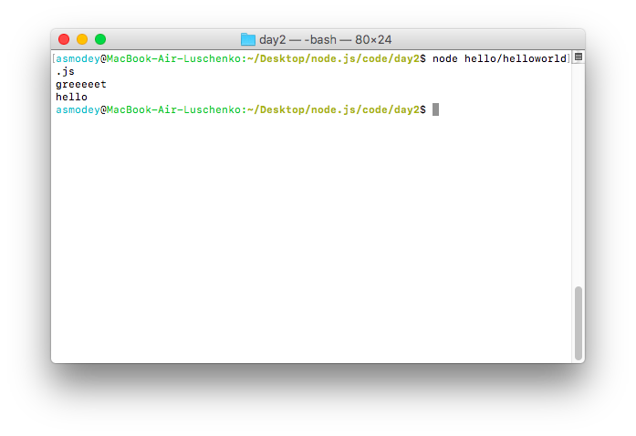
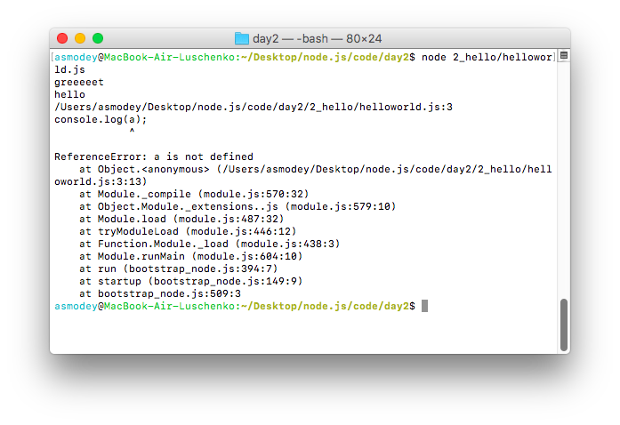

var KorzinaModule=(function(){
var sum=0; //privet data
goods=[]; //privet data
// public interface
return {
addProduct:function(product){
sum+=product.prise;
goods.push(product)
},
printProduct:function(){
for(var i=0; i < goods.length;i++){
console.log(goods[i].name, goods[i].price)
}
}
}
}());
var sault={
name:'Соль',
price:20
};
KorzinaModule.addProduct(sault);
KorzinaModule.printProduct()
Node.js использует модульную систему. То есть вся встроенная функциональность разбита на отдельные пакеты или модули. Модуль представляет блок кода, который может использоваться повторно в других модулях.
При необходимости мы можем подключать нужные нам модули. Какие встроенные модули есть в node.js и какую функциональность они предоставляют, можно узнать из документации.
Для загрузки модулей применяется функция require(), в которую передается название модуля. К примеру, в первом приложении из предыдущей темы для получения и обработки запроса был необходим модуль http:
var http = require("http");
После получения модуля мы сможем использовать весь определенный в нем функционал, который опять же можно посмотреть в документации.
Подобным образом мы можем загружать и использовать другие встроенные модули. Например, используем модуль os, который предоставляет информацию об окружении и операционной системе:
var os = require("os");
// получим имя текущего пользователя
var userName = os.userInfo().username;
console.log(userName);
Мы не ограничены встроенными модулями и при необходимости можем создать свои. Так, в прошлой теме проект состоял из файла helloworld.js. Добавим рядом с этим файлом новый файл greeting.js и определим в нем следующий код:
console.log("greeting module");
В файле helloworld.js подключим наш модуль:
var greeting = require("./greeting");
В отличие от встроенных модулей для подключения своих модулей надо передать в функцию require относительный путь с именем файла (расширение файла необязательно):
Запустим приложение:
Таким образом, мы получаем возможность создавать модульную структуру сайта, что позволяет реализовать разделение сайта на заголовок, футер, боковую панель, главную и т.д.
В предыдущем примере, мы смогли подключить код одного модуля в другой. Давайте изменим код файла greeting.js:
console.log('greeeeet');
var a = 'primer';
Теперь попытаемся вывести переменную a в файле helloworld.js:
var greeting = require("./greeting");
console.log('hello');
console.log(a);
В результате выполнения мы получим ошибку:
Для реализации возможности передавать переменные из одного модуля в другой, воспользуемся методом module.exports. Изменим код файла greeting.js
console.log('greeeeet');
module.exports.a = 4;
и файла helloworld.js
console.log('greeeeet');
module.exports.a = 4;
Так, с помощью объекта module.exports мы можем передавать свойства и методы в другой модуль.